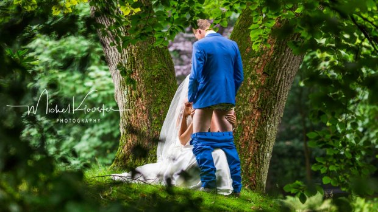

Home
Mijn hobbys
Nieuws
Home page
Illegale vuurwapens
Inwoners van Australië hebben sinds juli van dit jaar 51.000....
lees meer
Water trein
Een treinreis onderwater. Het idee klinkt misschien een tikje vreemd...
lees meer
Diabetes tatoege
Wetenschappers van Harvard en MIT hebben slimme inkt ontwikkeld.....
lees meer
Blowjob bruids foto
Fotograaf Michel Klooster zette een vrij expliciete bruidsfoto op zijn Facebookpagina....
lees meer
